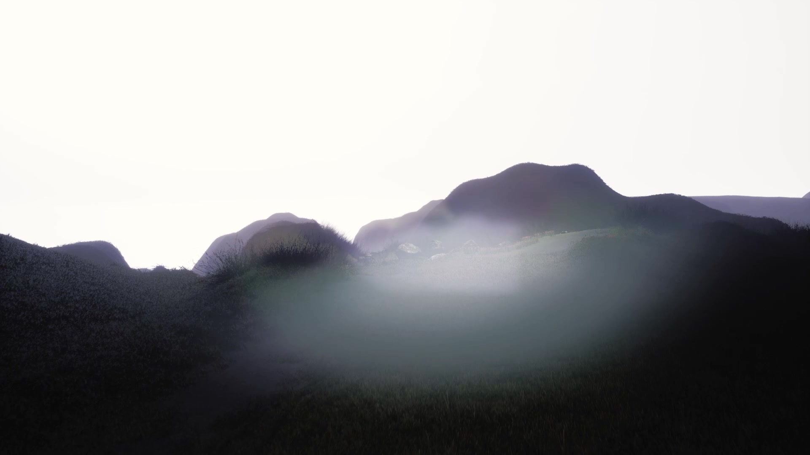
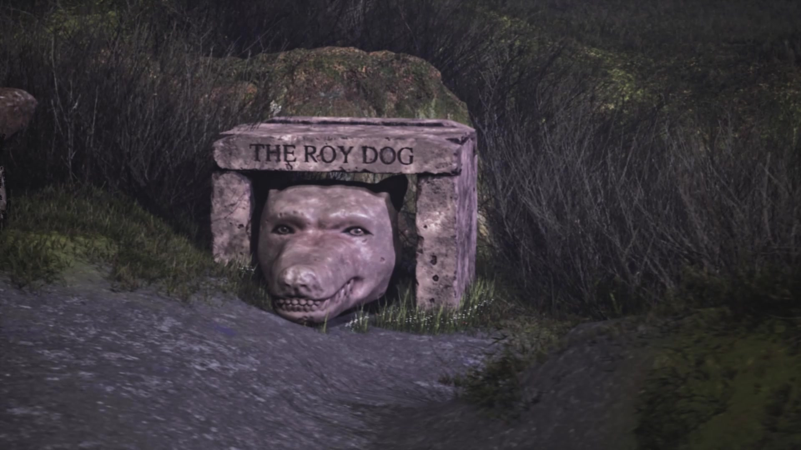
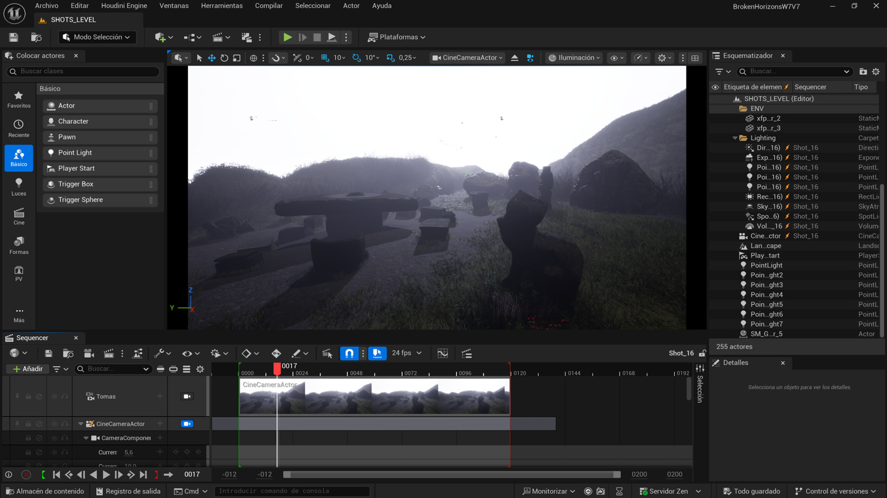
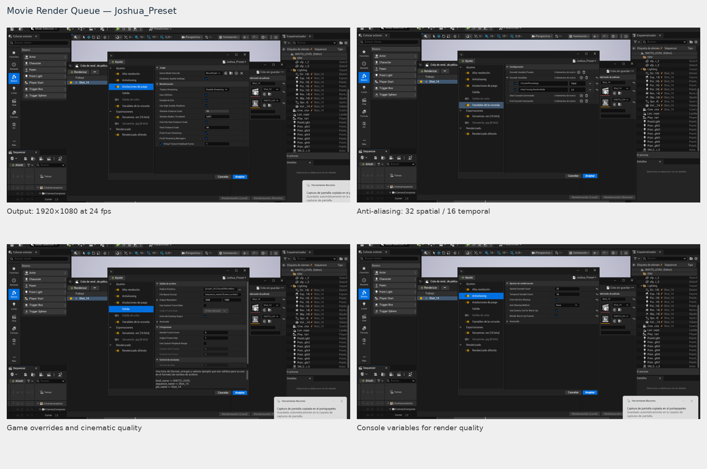
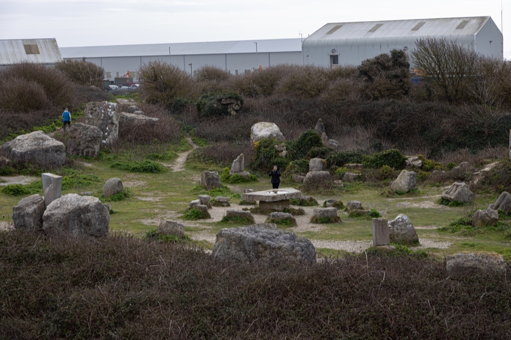
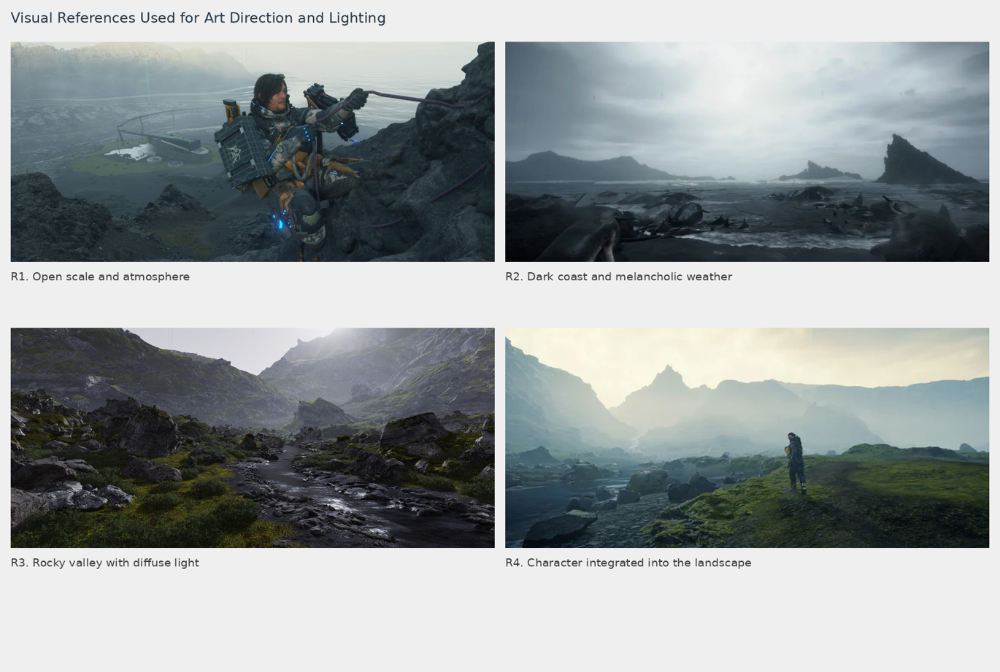

Establishing the mood
I compared interactive and cinematic workflows, studied rainy and overcast lighting, and explored shot flow and camera movement. Early tests helped establish a cold, solitary visual language.
02 / LIGHTING & LOOK DEVELOPMENT
Light, atmosphere and camera work that give an environment its emotional tone.
Featured work: Broken Horizons · MSc group project, Bournemouth University
Watch the showreel/ FEATURED FILM
A cinematic recreation of Tout Quarry Sculpture Park in Portland, Dorset.
/ OVERVIEW
For Broken Horizons, I helped turn the team's recreation of Tout Quarry into a cinematic sequence with a sense of solitude and melancholy. Death Stranding informed the visual direction: open landscapes, diffuse light, atmospheric depth and a deliberate, trailer-like rhythm.
My contribution combined lighting and cinematography. I developed around twenty working shots, with fourteen selected for the cinematic, refining light and camera together so the environment and its sculptures became the visual focus.
I compared interactive and cinematic workflows, studied rainy and overcast lighting, and explored shot flow and camera movement. Early tests helped establish a cold, solitary visual language.
I moved from a general environment setup to individual shots. Wide views, sculptural details and foreground flowers offered different scales, while fog and exposure helped maintain a coherent atmosphere.
When EXRs appeared darker in Resolve than in the Unreal viewport, I compared them in Photoshop and investigated colour interpretation in post-production. This helped distinguish display and colour-workflow issues from lighting decisions.

Foreground silhouettes and a bright, misty distance create layers within the landscape. Frame from the group film.

Camera placement and light focus attention on the Roy Dog. Sculpture asset by Youyang Dong; my contribution was lighting, camera work and rendering.
/ BEHIND THE SHOTS

An active Unreal shot showing the camera, sequence and lighting setup. From my individual contribution report.
View full size ↗
My Movie Render Queue configuration, documented alongside the final EXR workflow.
View full size ↗These are the settings recorded in my contribution report. The emphasis was cinematic image quality, with render tests and shot-specific adjustments supporting the final sequence.
/ VISUAL DEVELOPMENT
Location studies and external imagery guided decisions about atmosphere, scale, diffuse light and composition.

LOCATION REFERENCE
The real location grounded the environment's scale, sculptural forms and natural layout. Photograph reproduced from the contribution report.

EXTERNAL VISUAL REFERENCES
The reference board from my report explores mist, tonal depth and quiet compositions. Death Stranding was the main visual inspiration; these images are reference material.
Death Stranding — official game page (opens in a new tab)Group Project and Industry Brief · MSc Computer Animation & Visual Effects, Bournemouth University. Supervised by Valery Adzhiev.
Roles follow the film credits and individual contribution report. Location photographs and the external reference board are reproduced from that report; reference imagery remains the work of its respective creators.
My broader practice includes personal and academic lighting work and specialised training at Lost Boys | School of VFX, using Katana, Arnold and Nuke.
Watch my lighting showreel